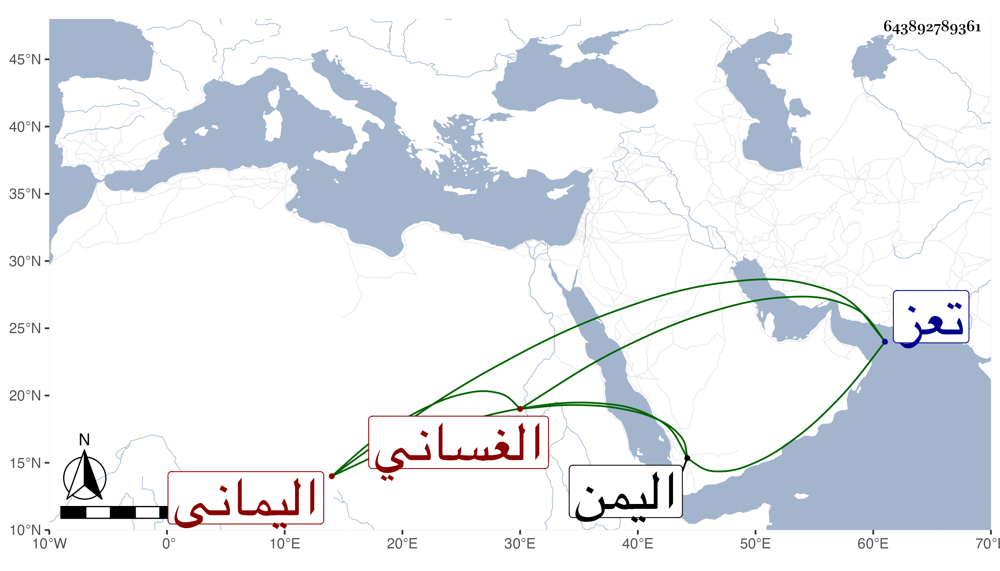

0902Sakhawi.DawLamic.ITO20230111-ara1.EIS1600.643892789361
Biography ID: 643892789361
962
إسماعيل بن يحيى بن أحمد بن إسماعيل بن العباس بن علي بن داود الأشرف بن الظاهر بحسب آخرا بعضها الأشرف بن الأفضل الغساني اليماني الماضي جده قريبا ملوك اليمن . استقر بعد أبيه وكانت فيه حدة مفرطة فعامل العسكر بالحدة والغلظة فكان لا يخلو يوما من قتل وعقوبة ومصادرة وتوجه إلى بعض العرب المفسدين فهزم غير مرة وكحل أخاه وشقيقه أحمد خوفا منه على الملك وأخاه حسن في آخرين جملتهم من أقربائه أحد عشر نفسا بل قتل عمته شقيقة أبيه وامرأة أخرى بيده لاتهامه بمصاحبتها وقطع يد امرأة أخرى تضرب بالرمل كل ذلك لتخوفه وتخيله أنهم يسعون عليه في الملك ويفسدون الناس عليه ، وكانت أيامه عجيبة وأحواله غريبة ولم يتهن بالسلطنة ، ومات بمدينة تعز في ثامن شوال سنة خمس وأربعين ودفن عند أبيه بمدرسته الظاهرية واستقر بعده المظفر يوسف بن عمر بن الأشرف إسماعيل بن العباس .
